유통관리사-1급 (2017-07-02 기출문제)
1과목: 유통경영
1. 카플란(Kaplan)과 노튼(Norton)이 제시한 균형성과표(BSC : Balanced ScoreCard)의 4가지 관점으로 옳지 않은 것은?
- 재무적 관점
- 생산적 관점
- 내부 프로세스 관점
- 학습 및 성장 관점
- 고객관점
(정답률: 알수없음)

2. 유통산업발전법에서 규정된 조항들의 내용으로 옳지 않은 것은?
- 직영점형 체인사업이란 체인본부가 주로 소매점포를 직영하되, 가맹계약을 체결한 일부 소매점포에 대하여상품의 공급 및 경영지도를 계속하는 형태의 체인사업 을말한다.
- 임의가맹점형 체인사업이란 체인본부의 계속적인 경영지도 및 체인본부와 가맹점 간의 협업에 의하여 가맹점의 취급품목·영업방식 등의 표준화사업과 공동구매·공동판매·공동시설활용 등 공동사업을 수행하는 형태의 체인사업을 말한다.
- 산업통상자원부장관은 기본계획에 따라 매년 유통산업발전시행계획을 관계 중앙행정기관의 장과 협의를 거쳐 세워야 한다.
- 산업통상자원부장관은 기본계획 및 시행계획 등을 효율적으로 수립·추진하기 위하여 유통산업에 대한실태조사를 할 수 있다.
- 산업통상자원부장관은 대규모점포 등 개설자가 대규모점포 등의 영업을 정당한 사유 없이 1년 이상 계속하여 휴업한 경우 그 등록을 취소하여야 한다.
(정답률: 알수없음)
3. 다음 사례에 해당하는 복지후생 방안은?
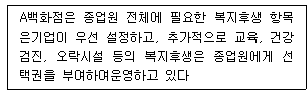
- 필수식 복지후생
- 유연식 복지후생
- 카페테리아식 복지후생
- 참여식 복지후생
- 자율식 복지후생
(정답률: 알수없음)
4. 재고조사방법 중 계속기록법에 대한 설명으로 가장 옳지 않은 것은?
- 기말재고액은 기초재고액에 당기매입액을 합한 뒤 매출원가를 차감하여 계산한다.
- 저가상품을 대량으로 취급할 경우 유용하다.
- 장부상 재고기록이 정확하게 유지된다는 장점이 있다.
- 실지재고조사법보다 실무상 기록면에서 불편할 수 있다.
- 재고자산의 매출원가를 수시로 추정하는데 용이하다.
(정답률: 알수없음)
5. 임금체계에 대한 설명으로 옳지 않은 것은?
- 직무급은 종업원이 맡은 직무의 상대적 가치에 따라 임금을 결정하는 방식이다.
- 연봉제란 개인의 능력발휘와 기여도(업적평가결과)에 따라 차등적인 임금을 결정하는 방식이다.
- 직무성과급이란 기본급이 직무급이고, 고과승급과 인센티브를 운영하는 임금체계이다.
- 직능급은 종업원이 수행하는 직무의 난이도를 기준으로 임금을 결정하는 방식이다.
- 연공급이란 임금을 종업원의 근속년수를 기준으로 차별화하여 결정하는 제도이다.
(정답률: 알수없음)
6. 소매점포내 종업원간 발생할 수 있는 갈등을 해결하는 방법에 대한 설명으로 옳지 않은 것은?
- 문제해결 : 갈등의 원인이 되는 문제를 공동으로 해결하게 함
- 상위목표 제시 : 갈등 당사자간 함께 추구해야 할 상위목표를 제시함
- 공동의 적 제시 : 갈등 당사자에게 공동의 적을 확인해주고 이를 강조함
- 협상 : 갈등 당사자들이 서로 다른 선호를 가지고 있을 때 공동의 결정을 해나감
- 성과통제 : 갈등 당사자들을 대상으로 행위보다는 성과평가를 엄격하게 함
(정답률: 알수없음)
7. ( )안에 들어갈 성과평가 평정오류를 올바르게 나열한 것은?
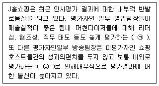
- ㉠ 후광오류, ㉡ 중앙집중오류
- ㉠ 관대화오류, ㉡ 분포오류
- ㉠ 비체계적오류, ㉡ 체계적오류
- ㉠ 대비오류, ㉡ 관대화오류
- ㉠ 경적효과오류, ㉡ 복제오류
(정답률: 알수없음)
8. 학습이론의 하나인 작동적 조건화(operant conditioning)와 관련이 없는 것은?
- 행위수정(behavior modification)
- 보상과 강화
- 스키너(B. F. Skinner)
- 조건자극과 무조건자극
- 긍정적 강화와 부정적 강화
(정답률: 알수없음)
9. 다음은 각 의사결정모형에 대한 설명이다. 올바르게 설명한 것은 모두 몇 개인가?
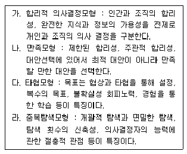
- 0개
- 1개
- 2개
- 3개
- 4개
(정답률: 알수없음)
10. 조직내 구성원간의 커뮤니케이션 네트워크는 사슬형(chain type), 원형(circle type), Y형(Y- type), 수레바퀴형(wheel of star type),완전연결형(all channeltype) 등이 있다. 이중 수레바퀴형 네트워크에 대한설명으로 옳은 것은?
- 일원화되어 있는 계통을 통해서 최고경영자의 의사가일선 작업자에게까지 전달된다.
- 리더에게 정보가 집중되어 구성원간에 정보공유가 안되는 단점이 있다.
- 그레이프바인(grapevine)과 같은 비공식적 커뮤니케이션이 좋은 예이다.
- 집단내에서 특정의 리더가 없이 비공식적 의견선도자가 있을 경우의 커뮤니케이션 네트워크이다.
- 위원회조직이나 태스크포스(task force) 같이 권한의집중이나 지위의 고하가 크게 문제되지 않는 조직에서의 커뮤니케이션 네트워크이다.
(정답률: 알수없음)
11. ( )안에 들어갈 용어를 올바르게 나열한 것은?
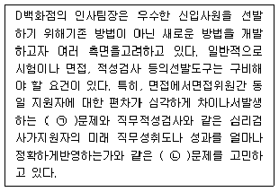
- ㉠ 일관성, ㉡ 구성타당성
- ㉠ 신뢰성, ㉡ 판별타당성
- ㉠ 일관성, ㉡ 내용타당성
- ㉠ 신뢰성, ㉡ 예측타당성
- ㉠ 안정성, ㉡ 수렴타당성
(정답률: 알수없음)
12. 다양한 종업원 보상프로그램 중 부가 급부(fringe benefit) 에 해당되지 않는 것은?
- 병가
- 유급휴가
- 연금제도
- 주식매입선택권
- 건강보험제도
(정답률: 알수없음)
13. 재무비율 중에서 기업의 안정성과 지급능력을 나타내는 비율 중의 하나로 볼 수 있는 것은?
- 레버리지비율
- 투자성비율
- 수익성비율
- 성장성비율
- 활동성비율
(정답률: 알수없음)
14. 태도(attitude)를 다차원적 개념으로 접근할 경우, 3가지구성요소를 올바르게 나열한 것은?
- 인지(cognition)적 요소 - 감정(affection)적 요소 - 행동(behavior)적 요소
- 지각(perception)적 요소 - 감정(affection)적 요소 - 평가(evaluation)적 요소
- 인지(cognition)적 요소 - 감정(affection)적 요소 - 평가(evaluation)적 요소
- 지각(perception)적 요소 - 인지(cognition)적 요소 - 행동(behavior)적 요소
- 지각(perception)적 요소 - 감정(affection)적 요소 - 행동(behavior)적 요소
(정답률: 알수없음)
15. 노사협의제와 단체교섭을 비교하여 설명한 내용으로 옳지 않은 것은?
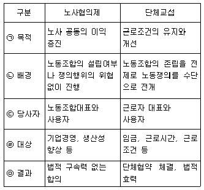
- ㉠
- ㉡
- ㉢
- ㉣
- ㉤
(정답률: 알수없음)
16. 한 번 학습된 것은 다른 쪽으로도 전이되어 그곳의 학습을 돕는다는 것을 학습의 전이라고 한다. 학습의전이 유형에 해당하지 않는 것은?
- 수평적 전이
- 부정적 전이
- 인과적 전이
- 연속적 전이
- 수직적 전이
(정답률: 알수없음)
17. 다음의 사례 내용과 가장 관련성이 높은 동기부여이론은?
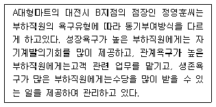
- 매슬로우(Maslow)의 욕구단계이론
- 알더퍼(Alderfer)의 ERG 이론
- 허즈버그(Herzberg)의 2요인 이론
- 맥클리랜드(McClelland)의 성취동기이론
- 브룸(Vroom)의 기대이론
(정답률: 알수없음)
18. 유통기업의 경영자에게 요구되는 변혁적 리더십(transformational leadership)에 대한 내용으로 옳지 않은 것은?
- 변혁적 리더들은 부하들의 본보기가 될 수 있도록 행동하여 부하들로부터 존경과 신뢰를 받는다.
- 변혁적 리더들은 부하들에게 일에 대한 의미와 도전을 제공하여 자신의 주변 사람들에게 동기를 부여한다.
- 변혁적 리더들은 부하들로 하여금 새로운 아이디어와창의적 문제해결을 요구하며, 부하들이 문제해결과정에 참여하도록 한다.
- 변혁적 리더들은 부하들을 개인적으로 지도하면서 부하 개개인의 발전 및 성장에 대한 욕구에 특별한 관심을 기울인다.
- 변혁적 리더들은 부하들에게 보상과 처벌을 통한동기부여 방법으로 목표를 달성할 수 있도록 한다.
(정답률: 알수없음)
19. 학습조직이론에 관한 내용으로 옳은 것을 모두 고르면?
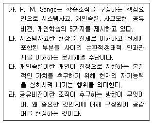
- 가, 나
- 나, 다
- 다, 라
- 가, 나, 다
- 가, 나, 다, 라
(정답률: 알수없음)
20. 다음 내용은 무엇에 대한 설명인가?
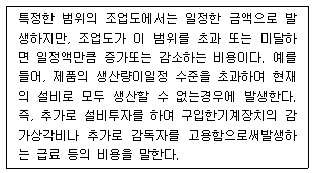
- 준변동비
- 준고정비
- 고정비
- 변동비
- 비대칭 변동비 물류경영
(정답률: 알수없음)
2과목: 물류경영
21. 재고의 공간적 배치와 관련된 기능으로, 물류거점별로소비자의 요구에 부응하는 형태별 분류와 배송을 가능하게 해 주는 재고관리의 기능은?
- 유통가공기능
- 경제적발주기능
- 운송합리화기능
- 수급적합기능
- 생산의 계획 및 평준화기능
(정답률: 알수없음)
22. 다음은 컨테이너(Container) 종류 중 무엇에 대한특징을 설명한 것인가?
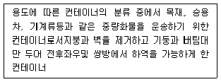
- 서멀 컨테이너(Thermal Container)
- 사이드 오픈 컨테이너(Side Open Container)
- 오픈 톱 컨테이너(Open Top Container)
- 플랫 랙 컨테이너(Flat Rack Container)
- 드라이 벌크 컨테이너(Dry Bulk Container)
(정답률: 알수없음)
23. 운송(transportation)에서 수요지, 공급지, 수요량, 공급량 등이 다음과 같을 때 최소비용법을 이용하여 산출한 총 운송비용은?
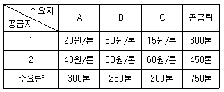
- 20,500원
- 21,000원
- 21,500원
- 22,000원
- 22,500원
(정답률: 알수없음)
24. 하역에 관련된 내용으로 옳지 않은 것은?
- 하역은 물품의 생산과 소비의 거리를 조정하여 시간적 효용을 창출한다.
- stacking은 보관위치에서 물품을 쌓는 작업이다.
- picking은 보관장소에서 물건을 꺼내는 작업이다.
- loading & unloading은 운송기기 등에 화물을 싣고 내리는 것이다.
- sorting은 화물을 품종별, 발송처별, 고객별 등으로 나누는 것이다.
(정답률: 알수없음)
25. 파렛트에 대한 내용으로 옳지 않은 것은?
- 우리나라 국가표준일관 파렛트 중 T-11은 가로X세로길이가 1,100mm X 1,100mm이다.
- 우리나라 국가표준일관 파렛트 중 T-12은 가로X세로길이가 1,200mm X 1,200mm이다.
- 파렛트를 사용하면 하역 및 작업능률이 향상될 뿐만 아니라 화물파손방지를 통한 물품보호효과도 있다.
- 파렛트를 사용하면 비용이 소요되며, 화물 무너짐 방지대책이 필요하다는 단점이 있다.
- 화물이 발송인으로부터 수취인에게 인도될 때까지 전 운송과정을 일관되게 파렛트로 운송하는 것을일관 파렛트화(palletization)라고 한다.
(정답률: 알수없음)
26. ( )에 알맞은 SCM 기법은?
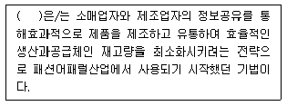
- QR(Quick Response)
- BPR(Business Process Reengineering)
- ECR(Efficient Consumer Response)
- CMI(Computer Managed Inventory)
- Cross Docking
(정답률: 알수없음)
27. 물류관련 용어에 대한 내용으로 옳은 것을 모두 고르면?
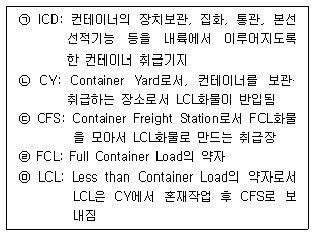
- ㉠
- ㉣
- ㉡, ㉢
- ㉢, ㉣
- ㉣, ㉤
(정답률: 알수없음)
28. 재고에 관련된 내용으로 옳지 않은 것은?
- 재고량이 일정수준에 도달하였을 때 일정량을 주문하여 재고관리하는 방식은 정량발주방법이다.
- 정해진 일정기간이 되었을 때 수요량에 맞는 양을 주문하여 재고관리하는 방식은 정기발주법이다.
- 정기발주법은 발주시기는 일정하나 발주량이일정하지 않기 때문에 발주량 결정이 중요하다.
- 재고를 관리·유지하는데 발생되는 이자, 창고료, 보험료, 세금 등은 재고유지비용이다.
- 안전재고량은 ‘안전계수 X 수요의 표준편차 X조달기간’으로 계산할 수 있다.
(정답률: 알수없음)
29. 물류공동화의 효과로 옳지 않은 것은?
- 화주 측면 : 물류비용 절감
- 물류업자 측면 : 안정적 경영기반확보 가능
- 사회적 측면 : 공차율 증가와 적재율 향상에 따른 운행대수 감소로 교통체증 감소
- 화주 측면 : 판매영업 등 본연의 업무에 전념할 수 있음에 따라 영업력이 강화되거나 경영개선 촉진가능
- 물류업자 측면 : 계획적인 물류업무수행
(정답률: 알수없음)
30. 물류정책기본법에서 규정하는 ‘물류사업’의 정의부분이다. ( )안에 들어갈 용어로 옳지 않은 것은?
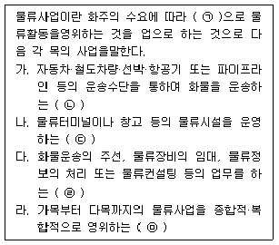
- ㉠ 유상
- ㉡ 국제물류주선업
- ㉢ 물류시설운영업
- ㉣ 물류서비스업
- ㉤ 종합물류서비스업
(정답률: 알수없음)
31. 물류센터 운영 효과에 대한 내용으로 옳지 않은 것은?
- 효과적인 배송체제 구축
- 공장과 물류센터 간에 대량 및 계획운송을 통한운송비 절감효과
- 물류거점의 조정을 통해 중복운송이나 교차운송 방지
- 과잉재고 및 재고편재 방지
- 물류센터를 판매거점화하면 제조업체의 직판체제확립은 가능하나, 유통경로는 복잡해지고 길어지는 문제 발생
(정답률: 알수없음)
32. 3PL(Third Party Logistics) 에 대한 내용으로 옳지 않은것은?
- 3PL이란 화주기업이 물류서비스의 향상, 물류비용절감, 물류활동 효율향상 등을 목적으로 물류활동 일부나 전부를 제3의 업체에게 위탁하는 것이다.
- 3PL에 물류를 위탁하는 회사는 물류를 위탁함으로써 그 회사 본연의 사업에 집중할 수 있다.
- 3PL 제공자들은 물류정보기술과 장비를 보유하기 때문에 고객의 필요성에 빠르게 부응할 수 있다.
- 물류가 회사의 핵심경쟁력의 하나인 경우라면 모든 물류활동을 3PL에 위탁하는 것이 좋다.
- 3PL을 사용할 경우 특정한 기능의 아웃소싱에서 오는 통제 상실이 발생할 수 있다.
(정답률: 알수없음)
33. 해상운송이 포함되지 않는 운송형태를 모두 고르면?
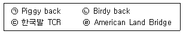
- ㉠
- ㉠, ㉡
- ㉡, ㉢
- ㉠, ㉡, ㉢
- ㉡, ㉢, ㉣
(정답률: 알수없음)
34. VMI에 대한 설명으로 옳은 것은?
- Visual Managed Inventory의 약자이다.
- 공급업체의 재고보충권한을 유통업체에게 이관하여 유통업체가 공급업체 창고의 재고수준을 관리하도록 하는 것이다.
- 공급업체가 유통업체의 재고정보를 공유하여 이를 바탕으로 효율적으로 재고보충을 한다.
- VMI로 인해 재고관리비용이 감소될 수 있으나 발주·입고·재고관리 등의 오류감소로 인한 관리업무의 효율성이 증대될 수 있는 것은 아니다.
- 구조화된 형태의 데이터인 표준전자문서를 컴퓨터와 컴퓨터 간에 교환하여 재입력과정 없이 업무에 활용할 수 있도록 하는 정보전달방식을 의미한다.
(정답률: 알수없음)
35. 보관과 관련한 각종 원칙에 대한 설명으로 옳지 않은 것은?
- 통로대면 보관의 원칙 : 물품 입출고가 용이하도록 통로에 접하도록 보관한다.
- 회전대응보관의 원칙 : 재고회전율에 맞게 입출하 빈도가 높은 물품은 출구 가까이 배치한다.
- 동일성의 원칙 : 동일품목이나 유사품목은 동일장소에 보관한다.
- 형상특성의 원칙 : 표준품은 컨테이너에, 비표준품은선반이나 용기에 보관한다.
- 선입선출의 원칙 : 먼저 입고시킨 물건을 먼저출고시킨다.
(정답률: 알수없음)
36. 물류의 목표를 달성하기 위한 고객서비스를 구현하기위해 고려해야 하는 물류의 7R원칙으로만 바르게 짝지어진 것은?
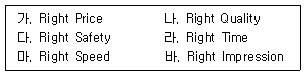
- 다, 라
- 가, 나. 라, 바
- 다, 라, 마, 바
- 가, 나, 라, 마, 바
- 가, 나, 다, 라, 마, 바
(정답률: 알수없음)
37. 기업물류비 산정지침에 따른 물류비 분류체계를 기준으로 했을 때 옳은 것은?
- 기능별 분류 : 자가물류비, 위탁물류비
- 영역별 분류 : 운송비, 보관비, 포장비, 하역비, 물류정보 및 관리비
- 지급형태별 분류 : 재료비, 노무비, 경비, 이자
- 세목별 분류 : 조달물류비, 사내물류비, 판매물류비
- 조업도별 분류 : 고정물류비, 변동물류비
(정답률: 알수없음)
38. 물류시스템을 구성하는 각종 요소의 규격과 치수에 관한기준을 표준화하는 물류모듈(Physical Distribution Module)화에 관한 설명으로 가장 옳지 않은 것은?
- 포장모듈화는 개장치수, 외장치수 같은 포장치수모듈화를 말한다.
- 운송모듈화는 트럭이나 화차 같은 운송단위의 모듈화를 말한다.
- 분배모듈화는 컨테이너나 파렛트 같은 용기모듈화를 말한다.
- 보관모듈화는 창고나 물류센터 같은 보관단위의 모듈화를 말한다.
- 하역모듈화는 하역시설과 장비의 모듈화를 말한다.
(정답률: 알수없음)
39. 재고결정과 관련된 내용으로 옳은 것은?
- 주문처리시간이 길고 사용률이 높고 서비스기준이 높을수록 재주문점이 낮아야 한다.
- 재고유지비, 주문비를 고려하여 적정주문량을 결정하는데 총 재고비용이 최대가 되는 점이 최적주문량이 된다.
- 최적재고량은 EOQ(Economic Order Quantity)공식을 사용함으로써 알 수 있다.
- EOQ는 1회 주문비와 단위당 재고유지비가 항상 일정하다고 가정하기 때문에 실제 업무와는 차이가 있다.
- EOQ 공식은 간단한 공식을 통해 쉽게 산출할 수 있다는 이점 덕분에 소매업자들에 의해 사용되고 있으나 제조업체나 대형도매업자에게는 큰 도움이 되지 않는다.
(정답률: 알수없음)
40. 물류합리화의 대상 중 하나인 포장의 개선에 관한 설명으로 가장 옳지 않은 것은?
- 포장의 합리화는 적정포장의 토대에서 이루어져야 한다.
- 국내외에서 생산·유통되는 각종 포장용기의 규격을 표준화해야 한다.
- 포장의 보호성을 해치지 않는 범위에서 사양의 변경을 통해 비용을 절감해야 한다.
- 포장작업의 집중화보다 분산화를 통해 유연성을 높여야 한다.
- 단기적, 부분적 개선이라도 규격화를 지향하는 전체시스템을 고려해야 한다.
(정답률: 알수없음)
3과목: 상권분석
41. 상권분석 기법의 하나로 점포선택행동을 확률적 현상으로 보는 Huff모델과 관련한 설명으로 옳지 않은 것은?
- 특정 점포의 효용이 다른 점포들의 효용보다 크면 효용이 큰 점포를 선택할 가능성이 높아진다.
- 소비자로부터 점포까지의 이동거리는 소요시간으로 대체하여 계산하기도 한다.
- 공간상에서 소매상권이 연속적이고 중복적인 성격이 있다는 것을 인정한다.
- 조사지역 개별 소비자의 점포 이용자료 보다는 평균적이고 객관적인 통계자료를 이용한다.
- 점포면적 및 거리에 대한 민감도계수는 상권마다소비자의 구매행동 자료를 통해 추정한다.
(정답률: 알수없음)
42. 소매포화지수(IRS)와 시장성장잠재력지수(MEP)에 대한설명으로 옳은 것은?
- 소매포화지수는 한 시장지역 내에서 특정 소매업태의소비자 1인의 잠재수요크기이다.
- 시장성장잠재력지수는 지역시장이 현재 창출하고 있는 시장수요측정 지표이다.
- 소매포화지수가 크면 시장의 포화정도가 높아 아직 경쟁이 치열하지 않음을 의미한다.
- 소매포화지수는 작을수록 신규점포에 대한 시장잠재력이 높다고 볼 수 있다.
- 상권내 거주자들의 지역외구매(outshopping) 정도가 높을수록 시장성장잠재력지수가 커진다.
(정답률: 알수없음)
43. 점포 외부의 동선 즉, 점외동선은 점포의 매출에 영향을 준다. 사람들이 통행하는 뒷골목은 다음 중 어떤 점외동선 유형에 해당하는가?
- 주동선
- 복수동선
- 부동선
- 접근동선
- 유희동선
(정답률: 알수없음)
44. 특정지역의 개략적인 수요를 측정하기 위해 사용되는 구매력지수(BPI)를 계산하는 과정에서 필요성이 가장낮은 자료는?
- 전체 지역의 인구수(population)
- 해당 지역의 인구수(population)
- 해당 지역의 소매점면적(sales space)
- 해당 지역의 소매매출액(retail sales)
- 해당 지역의 가처분소득(effective buying income)
(정답률: 알수없음)
45. 다음 설명에 해당하는 소매상권의 매력도 평가 지수는?
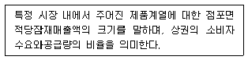
- 구매력지수(BPI : buying power index)
- 판매활동지수(SAI : sales activity index)
- 소매포화지수(IRS : index retail saturation)
- 상권매력도지수(RAI : retail attractiveness index)
- 시장성장잠재력지수(MEP : market expansion index)
(정답률: 알수없음)
46. 다음 설명에 해당하는 입지대안 평가의 원칙은?
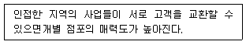
- 고객차단원칙(principle of interception)
- 접근가능성의 원칙(principle of accessibility)
- 동반유인원칙(principle of cumulative attraction)
- 보충가능성의 원칙(principle of compatibility)
- 점포밀집의 원칙(principle of store congestion)
(정답률: 알수없음)
47. 소비자가 상권내의 세 점포 중에서 하나를 골라 어떤 상품을 구매하려고 한다. 점포의 크기와 그 소비자의집에서 점포까지의 거리는 아래의 표와 같다. 수정Huff모형에 따라 세 점포에 대해 이 소비자가 느끼는 매력도의 크기를 올바르게 나타낸 것은?
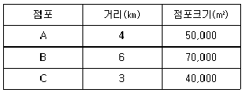
- C > A > B
- A > B > C
- B > A > C
- A > C > B
- B > C > A
(정답률: 알수없음)
48. 인구 9만명인 도시 A와 인구 1만명인 도시 B 사이의 거리는 20Km이다. Converse의 공식에 의하면 두 도시간의 상권경계(상권분기점)는 도시 A로부터 몇 Km떨어진 곳이 되는가?
- 10Km
- 5Km
- 15Km
- 12Km
- 8km
(정답률: 알수없음)
49. 상권분석에 관한 주요이론들에 대한 설명으로 옳지 않은 것은?
- Christaller의 중심지이론에 따르면, 소비자들이유사점포 중의 한 점포를 선택할 때 그 중 가장 가까운 점포를 선택한다.
- Reilly의 소매중력이론에 따르면, 다양한 점포간의밀집이 개별점포의 매력도를 증가시킨다.
- Huff의 소매인력이론은 도시간의 상권경계를 확률적 접근으로 설명하고 있다.
- Reilly의 소매중력이론은 Converse가 개발한 분기점공식으로도 나타낼 수 있다.
- Luce의 확률적 선택모델을 이용하면 특정 점포에 대한 매력 평가라는 소비자행동적 요소를 포함시킬 수 있다.
(정답률: 알수없음)
50. Christaller의 중심지이론에 대한 내용으로 옳지 않은 것은?
- 중심지의 정상이윤 확보에 필요한 최소한의 수요를 발생시키는 상권범위를 최소수요충족거리(threshold)라 한다.
- 상업중심지간에도 위계구조가 있다.
- 상업중심지가 포괄하는 상권의 규모는 도시 내의소득수준에 따라 결정된다.
- 중심지의 최대도달거리는 중심지에서 제공하는 상품의 가격과 소비자가 그것을 구입하는 데 드는 교통비의 영향을 받는다.
- 중심지란 배후주거지역에 대해 다양한 상품과서비스를 제공하며 상업, 행정 기능이 밀집된 장소를 말한다.
(정답률: 알수없음)
51. 상권 매력도를 평가할 때 평가요인이 되는 지역외구매(outshopping)에 대한 내용으로 옳지 않은 것은?
- 지역외구매란 해당지역에 거주하는 소비자들이 상권외부지역에서 구매하는 현상을 말한다.
- 해당 지역에서의 가구당(혹은 1인당) 예상지출액과 실제지출액의 차이를 유발한다.
- 시장성장잠재력지수(MEP : market expansion index)가 높으면 지역외구매 현상이 많아 신규수요창출가능성이 크다고 본다.
- 해당 지역과 타지역간 소매점의 마케팅능력 차이는반영되지 않는다.
- 교통수단의 발달은 소비자의 이동가능성을 높여지역외구매 현상을 촉진한다.
(정답률: 알수없음)
52. 상가를 신설하기 위해 기존의 건물을 인수하기로 했다. 면적이 2,000m2의 대지위에 건물은 A동, B동으로 총2개동이다. A동은 각 층의 면적이 200m2인 지상3층과 지하1층, B동은 각 층의 면적이 300m2인 지상6층과 지하2층으로 구성되어 있다. 이때의 용적률은 얼마인가? (단, 건물외부에 200m2의 지상주차장(건물부속)이 있고 건물내부 주민공동시설 면적의 합이 200m2임)
- 100%
- 110%
- 120%
- 140%
- 160%
(정답률: 알수없음)
53. 점포와의 거리에 따라 상권을 구분할 때 각 상권의 개념과 특성을 상대적으로 비교·설명한 내용으로 옳지 않은 것은?
- 1차상권은 전체상권 중에서 점포에 가장 가까운 지역을 말하는데 매출액이나 소비자의 수에서 일반적으로 60~70% 정도를 차지하는 지역으로 그 비율은 절대적이지 않다.
- 2차상권은 1차상권을 둘러싸는 형태로 주변에 위치하며 소비자의 일정비율을 추가로 흡인하는 지역이다.
- 3차상권은 소비자의 내점빈도가 비교적 낮으며 1,2차상권에 비해 주변에 위치한 경쟁점포들과 상권중복 또는 상권잠식의 가능성이 낮은 지역이다.
- 1차상권이 중요한 이유는 소비자의 밀도가 가장 높은 곳이고 소비자의 충성도가 높으며 1인당 판매액이 가장 큰 핵심적인 지역이기 때문이다.
- 3차상권은 상권으로 인정하는 한계(fringe)가 되는 지역범위이며 지역적으로 넓게 분산되어 해당 점포를 이용하는 소비자의 밀도가 낮다.
(정답률: 알수없음)
54. 다음은 신규점포를 개설하는 과정에서 Huff모델을 활용해 상권을 분석하는 세부과정을 기술한 것이다. 일반적으로 적용되는 분석과정을 순서대로 올바르게 나열한 것은?
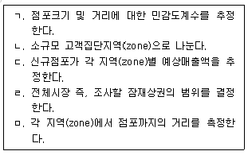
- ㄱ → ㅁ → ㄴ → ㄷ → ㄹ
- ㄴ → ㅁ → ㄹ → ㄱ → ㄷ
- ㄹ → ㄷ → ㅁ → ㄱ → ㄴ
- ㄹ → ㄴ → ㅁ → ㄱ → ㄷ
- ㄱ → ㄹ → ㄴ → ㅁ → ㄷ
(정답률: 알수없음)
55. 체인점의 도미넌트(dominant)출점전략에 대한 설명으로 옳지 않은 것은?
- 여러 지역에 걸쳐서 점포를 분산출점 시킴으로써 단기간에 전체 시장에 진입하려는 전략이다.
- 도미넌트 출점전략의 효과를 높이기 위해서는 점포규모의 표준화가 필요하다.
- 도미넌트 출점전략의 효과를 높이기 위해서는 상품구색과 매장구성의 표준화가 필요하다.
- 도미넌트 출점전략은 주요 간선도로를 따라 출점하는 선적전개와 주택지역 등을 중심으로 전개하는 면적전개로 구분된다.
- 도미넌트 출점전략은 지명도 향상, 물류비감소, 경쟁자의 출점가능성 감소 등의 장점을 갖는다.
(정답률: 알수없음)
56. 용도지역 및 용도지구에 대한 설명으로 옳지 않은 것은?
- 건폐율은 대지면적에 대한 건축면적의 비율로서 건축물의 과밀을 방지하고자 설정된다.
- 용적률은 대지면적에 대한 건축 연면적의 비율을 의미한다.
- 도시지역의 용도지역은 주거지역, 상업지역, 공업지역, 녹지지역으로 구분된다.
- 용도지역은 중첩하여 지정될 수 있는 반면, 용도지구는 중첩하여 지정될 수 없다.
- 개발진흥지구는 주거, 상업, 공업, 유통물류, 관광휴양 등의 기능을 집중적으로 개발·정비하기 위해 지정된다.
(정답률: 알수없음)
57. 중심성지수에 대한 설명으로 옳지 않은 것은?
- 중심성지수는 소매업의 공간적 분포를 설명하는 데에 도움을 주는 지표이다.
- 중심성지수는 소매업이 균등하게 분포되어 있다는 것을 기본 가정으로 하고 있다.
- 특정지역의 총 소매판매액을 1인당 구매액으로 나눈 값과 거주인구를 비교한 값이다.
- 중심성지수의 값이 1이 되는 경우는 지역이 외부유동인구가 없는 고립된 지역일수도 있다.
- 일반적으로 주위에 점포가 많이 없는 지역은 1보다낮은 값을 가지게 된다.
(정답률: 알수없음)
58. 상권분석시 관심을 가져야 할 공간적 불안정성(spatialnon-stability)에 관한 설명으로 옳지 않은 것은?
- 지역별 교통상황의 차이나 점포의 밀도가 원인이 될 수 있다.
- 공간상호작용모델의 모수들이 공간적으로 차이나는 것과는 관련이 없다.
- 각 지역에 거주하는 사람들의 사회경제적 특성의차이로 인해 발생할 수 있다.
- 세분시장별 모델추정방법으로 공간적 불안정성의발생가능성을 줄일 수 있다.
- 공간적 불안정성이 크면 통계적 적합도가 높은 경우에도 분석과정에서 오차가 발생할 수 있다.
(정답률: 알수없음)
59. 상권과 고객침투율과의 관계 및 이를 통해 얻을 수 있는 개념에 대한 설명으로 옳지 않은 것은?
- 점포출점의 관점에서 살펴본다면 상권은 해당지역의 고객침투율로 살펴볼 수 있다.
- 고객침투율로 상권을 설정하면 상권인구, 상권 내매출비율 등을 산출할 수 있다.
- 상권인구는 일정이상의 고객침투율이 있는 범위내의인구를 의미한다.
- 상권 내 매출비율은 전체 매출에서 상권 내 매출의 비율로 설명한다.
- 확장상권인구란 상권 내 매출비율을 상권인구로나누어 구한 매출에 기여할 수 있는 최대 인원이다.
(정답률: 알수없음)
60. 다점포 소매네트워크의 설계, 신규점포 추가시의영향분석, 기존점포의 재입지 및 폐점 등의 상황을 분석할 때 입지배정모형(location allocation model)이 활용될 수 있다. 이 모형의 5가지 주요 구성요소에 해당하지 않는 것은?
- 지점간 거리자료
- 배정규칙
- 수요지점
- 교통량자료
- 실행가능한 부지 유통마케팅
(정답률: 알수없음)
4과목: 유통마케팅
61. 서비스마케팅에 관한 설명으로 가장 옳지 않은 것은?
- 제품과 달리 서비스에 고객이 생산과정에 참여할 수 있고, 고객도 상품의 일부분이 될 수도 있다.
- 서비스는 무형성, 생산과 소비의 비분리성, 동질성, 소멸성의 네 가지 특성으로 요약된다.
- 서비스경제에서는 제조기업의 서비스기업화, 서비스기업의 보조서비스 확대, 제조기업의 부가서비스 증가 등이 확대된다.
- 서비스마케팅믹스는 전통적 마케팅믹스에 사람, 프로세스, 물리적 증거관리가 추가되었다.
- 서비스마케팅은 외부 마케팅, 내부 마케팅, 상호작용적 마케팅의 삼위일체적 관점을 지향한다.
(정답률: 알수없음)
62. 심리적 가격결정에 대한 설명으로 옳지 않은 것은?
- 백화점이 특정 제품의 세일을 자주하게 되면, 소비자는 그 제품의 준거가격을 낮출 가능성이 높아진다.
- 구매자가 어떤 상품에 대하여 지불할 용의가 있는 최저가격을 유보가격이라고 하며, 이보다 싸게 되면 품질을 의심하게 된다.
- 구매자들이 이득보다 손실에 더 민감하게 반응하는 현상을 손실회피(loss aversion)라고 하며, 가격인하보다 가격인상에 더 민감함을 의미한다.
- 구매자들이 가격이 높을수록 품질이 높을 것이라고 기대하는 것이 가격-품질 연상이다.
- 베버(Weber)의 법칙이란 ‘가격변화의 지각이 가격수준에 따라 달라진다는 것’을 말한다.
(정답률: 알수없음)
63. 다음에서 설명하고 있는 서비스 방식은 무엇인가?
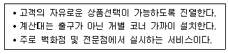
- 셀프 서비스(self service) 방식
- 준 셀프서비스(semi self service) 방식
- 자기선택 서비스(self selection service) 방식
- 신용서비스(credit service) 방식
- 자동판매기(vending service) 방식
(정답률: 알수없음)
64. 점포내 상품 진열방법에 대한 설명의 짝으로 옳은 것은?
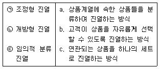
- ㉠-a, ㉡-b, ㉢-c
- ㉠-b, ㉡-a, ㉢-c
- ㉠-a, ㉡-c, ㉢-b
- ㉠-c, ㉡-a, ㉢-b
- ㉠-c, ㉡-b, ㉢-a
(정답률: 알수없음)
65. 벤더(vendor)에 대한 설명으로 옳지 않은 것은?
- 벤더란 소매업자가 제품을 판매하는 회사를 말한다.
- 소매업자는 보통 제조업자상표 벤더, 소매업자상표벤더, 라이선스상표의 벤더, 무상표 벤더와 거래한다.
- 라이선스(licence)상표의 벤더란 유명업체의 상표를 빌려서 제품을 개발, 생산, 판매하는 회사를 말한다.
- 벤더와 소매업체가 전략적 관계라면, 장기적이며 관계투자가 상당하다.
- 제조업자 상표의 벤더는 일반적인 내셔널 브랜드(national brand)를 취급하는 회사를 말한다.
(정답률: 알수없음)
66. 소매 점포의 직원을 선발하기 위한 수요예측방법에 대한설명으로 옳지 않은 것은?
- 인적자원의 수요예측은 과거 추세, 현재 상황, 미래가정에 입각하여 이루어진다.
- 정성적 방법으로 추세분석이나 델파이기법 등이 주로 사용된다.
- 정성적 방법의 하나인 명목집단법은 의사결정하는데 시간이 짧다는 장점이 있다.
- 명목집단법은 브레인스토밍과 브레인라이팅 기법의 장점들을 살리기 위해 고안되었고, 브레인스토밍기법에 토의 및 투표 기법 등의 요소를 결합하여 만들어진 것이다.
- 델파이 기법은 어떠한 문제에 관하여 전문가들의 견해를 유도하고 종합하여 집단적 판단으로 정리하는 일련의 절차라고 정의할 수 있다.
(정답률: 알수없음)
67. 다음과 같이 옷 구매를 고민하는 소비자 A를 가장적합하게 설명할 수 있는 모형은?
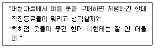
- 정교화가능성모형
- 저관여 하이어라키모형
- 다속성태도모형
- 확장된 Fishbein모형
- 인지적 학습모형
(정답률: 알수없음)
68. 다음 사례의 소매기업이 해외 시장으로 진입하려는 방식의 장점은?
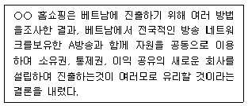
- 현지 경쟁업체의 탄생 위험을 증가시키는 반면, 이익의 빠른 회수가 가능하다.
- 해외에 점포를 직접 운영하기 때문에 통제권이 매우 높다.
- 진입업체의 위험을 줄이고 지역시장에 대한 정보를 비교적 정확하게 파악할 수 있다.
- 가장 높은 잠재적 수익을 누릴 수 있는 해외 진입전략이다.
- 위험이 가장 낮고 투자도 가장 적게 요구된다.
(정답률: 알수없음)
69. 소매업체들의 성장전략에 대한 설명의 짝으로 옳은 것은?
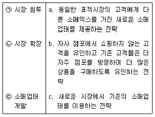
- ㉠-a, ㉡-b, ㉢-c
- ㉠-a, ㉡-c, ㉢-b
- ㉠-b, ㉡-a, ㉢-c
- ㉠-b, ㉡-c, ㉢-a
- ㉠-c, ㉡-a, ㉢-b
(정답률: 알수없음)
70. 무점포 소매상에 대한 내용으로 옳지 않은 것은?
- 텔레비전 마케팅은 크게 TV광고에서 직접 주문에 관한 정보를 제공하여 주문을 받는 홈쇼핑 채널방식과 쇼핑만을 전담하는 채널에서 정규방송시간 내내 상품안내와 주문을 받는 인포머셜방식이 있다.
- 모바일 커머스(mobile commerce)는 ‘무선통신 기술을 이용하여 소비자나 기업이 안전하게 상품이나 서비스를 구매할 수 있도록 하는 것’이라고 정의할 수 있다.
- 국내에서 인터넷 쇼핑몰의 성장세는 하향하는 반면, 모바일 쇼핑은 빠르게 성장하고 있다.
- 방문판매와 다단계판매는 판매원을 관리하고 보상하는 방식에서만 차이가 있을 뿐 판매원이라는 인적 네트워크를 판매수단으로 활용한다는 점에서는 차이가 없다.
- 직접판매란 ‘장소의 구애 없이 대면방식으로 제품과서비스를 소비자에게 판매하는 행위를 총칭하는 것’이다.
(정답률: 알수없음)
71. 인터넷 소매업의 유형에 대한 설명으로 가장 옳지 않은 것은?
- 인터넷 웹페이지를 통해 제품주문을 받고 오프라인매장을 통해 제품을 제공하는 인터넷 소매업은 채널지원형에 해당한다.
- 온라인 카테고리 킬러는 높은 브랜드 인지도를 확보하고 있어야 유리하다.
- 오픈마켓, 소셜커머스 등의 온라인 쇼핑업체는 상품을 구매하여 판매함으로써 마진을 수입원으로 한다.
- 입찰에 의해 가격결정이 이루어지는 온라인 경매형의경우, 수익은 커미션과 광고수입으로 실현된다.
- 수직적 포탈형은 구체적인 상품의 정보를 제공하면서소비자가 자사 사이트에서 상품을 구매하도록 유도한다.
(정답률: 알수없음)
72. TV홈쇼핑이 원활하게 이루어지기 위해서는 많은참여자가 필요한데 그 중에서도 핵심적인 참여자인 아래의 사업자를 순서대로 올바르게 나열한 것은?
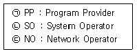
- ㉠ 방송채널사용사업자, ㉡ 종합유선방송사업자, ㉢ 전송망사업자
- ㉠ 종합유선방송사업자, ㉡ 방송채널사용사업자, ㉢ 전송망사업자
- ㉠ 전송망사업자, ㉡ 종합유선방송사업자, ㉢ 방송채널사용사업자
- ㉠ 방송채널사용사업자, ㉡ 전송망사업자, ㉢ 종합유선방송사업자
- ㉠ 종합유선방송사업자, ㉡ 전송망사업자, ㉢ 방송채널사용사업자
(정답률: 알수없음)
73. 제품믹스의 가격 결정 방법에 대한 설명으로 가장 옳지 않은 것은?
- 제품라인 가격결정법 : 제품계열간 동일 수준 제품들의 묶음을 개별 품목으로 구매하는 것보다 낮은 가격으로 제시하는 방법
- 선택사양 가격결정법 : 주력제품에다 선택제품, 사양 및 서비스를 붙여서 제시하는 가격결정 방법
- 종속제품 가격결정법 : 주요제품과 함께 사용해야하는 종속제품에 대한 가격을 결정하는 방법
- 이분 가격결정법 : 고정된 요금과 추가적 서비스사용에 대한 가격으로 나누어 가격을 결정하는 방법
- 부산물 가격결정법 : 주요제품의 가격이 보다 경쟁적 우위를 차지할 수 있도록 부산물의 가격을 결정하는 방법
(정답률: 알수없음)
74. 다음 글상자에서 제시된 방안은 서비스 갭 모형에서 어떤 갭을 주로 해소하기 위한 것인가?
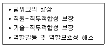
- GAPⅠ : 고객기대와 경영자 인식의 차이
- GAPⅡ : 경영자 인식과 설계된 서비스의 차이
- GAPⅢ : 설계된 서비스와 실제 제공된 서비스의 차이
- GAPⅣ : 외부 커뮤니케이션된 서비스와 실제 제공된 서비스의 차이
- 고객 갭 : 고객의 기대와 지각의 차이
(정답률: 알수없음)
75. 유통업체가 CRM(Customer Relationship Management)을 통해 얻을 수 있는 효과들을 모두 고르면?
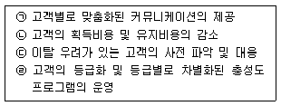
- ㉠, ㉡
- ㉡, ㉢
- ㉢, ㉣
- ㉠, ㉡, ㉢
- ㉠, ㉡, ㉢, ㉣
(정답률: 알수없음)
76. 단속형 거래와 관계형 거래를 비교한 내용으로 옳지 않은 것은?
- 단속형 거래는 단순한 요구나 제안으로부터 의무조항이 발생하지만, 관계형 거래는 기존 거래관계, 상관습, 법률에 의해 형성된 약속에 의해 의무가 발생한다.
- 단속형 거래는 권리와 의무 등이 완전 양도 가능하지만, 관계형 거래는 제한적으로 양도가능하다.
- 단속형 거래는 거래처에 대한 상대적 의존도가 높지만, 관계형 거래는 상대적 의존도가 낮다.
- 단속형 거래는 거래처를 단순고객으로 보지만, 관계형 거래는 동반관계로 본다.
- 단속형 거래는 이익과 부담이 명확하게 구분되지만, 관계형 거래는 이익과 부담의 일부를 공유한다.
(정답률: 알수없음)
77. 소매업체의 시장세분화에 대한 설명으로 옳지 않은 것은?
- 세분 소매시장내 고객의 욕구이질성, 다른 세분시장고객의 욕구동질성을 조건으로 한다.
- 세분시장의 규모를 확인할 수 있어야 한다.
- 세분시장이 결정되면 적절한 소매믹스를 고객에게 전달할 수 있어야 한다.
- 다속성 태도모형에 의하면, 동일한 편익에 대해유사한 수준의 중요도를 보인 고객들은 동일한 세분시장에 속할 가능성이 높다.
- 시장세분화는 지리적, 인구통계적, 심리적, 행동적세분화를 통해 가능하며, 복합적 세분화도 가능하다.
(정답률: 알수없음)
78. A 고객이 다속성 태도모형 중 보상적 태도모형에 기초하여 점포태도를 결정할 때, 점포운영자의 대응방안으로 옳지 않은 것은?
- 고객이 지각하는 경쟁 점포와 비교한 자사의 점포약점 자체를 개선한다.
- 우리 점포의 특정 속성은 우수한데 반해, 이를 잘못알고 있는 고객의 속성 지각을 개선한다.
- 고객이 정확하게 알지 못하고 있는 경쟁 점포의 약점은 비교광고를 통해 제시한다.
- 자사 점포가 강점을 지니고 있는 속성인데 반해, 고객이 상대적으로 덜 중요하게 지각하는 속성의중요도를 부각시킨다.
- 고객이 지각하는 자사 점포의 가장 매력적인속성만을 강조한다.
(정답률: 알수없음)
79. 저관여제품의 소비자 구매특징 및 유통전략으로 가장 옳지 않은 것은?
- 저관여제품의 구매는 짧은 시간 내에 적은 정보를 근거로 결정된다.
- 주로 단가가 싸고 셀프서비스로 판매될 수 있는 제품들이다.
- 비누, 치약, 샴푸 등의 생필품은 소비자의 ‘동반구매욕구’가 강하다.
- 한정된 품목에서 다양한 모델을 갖춘 카테고리킬러가 주 유통업태가 된다.
- 저관여제품은 소비자의 원스톱 쇼핑의 욕구를 충족시켜 주는 것이 중요하다.
(정답률: 알수없음)
80. 소비자의 구매동기를 크게 ‘부정적인 상태를 제거하려는 동기’ 와 ‘긍정적인 상태를 추구하려는 동기’ 로 구분할 경우, ‘부정적인 상태를 제거하려는 동기’에 해당되지 않는 것은?
- 현재 사용하고 있는 제품(브랜드)의 문제점으로 인해보다 나은 것을 사용하고자 하는 욕구
- 현재 사용하는 제품(브랜드)이 소비되어 고갈되지 않도록 추가 구매하여 재고를 유지
- 당면한 문제를 해결해 줄 수 있는 제품(브랜드)의 탐색
- 해당 제품(브랜드)을 구매하고 사용함으로써 자긍심을 느끼고 싶은 욕구
- 미래에 발생할 문제를 피하는 데 도움이 되는 제품(브랜드)의 탐색 유통정보
(정답률: 알수없음)
5과목: 유통정보
81. XML 에 대한 설명으로 가장 옳지 않은 것은?
- XML문서는 웹에서 구조화된 문서를 전송할 수 있도록 내용과 구조, 표현이 분리된 구조적 문서이다.
- XML을 이용하면 데이터베이스 조작이나 환경 설정, 서비스 관련 설정을 더 쉽게 처리할 수 있다.
- SGML처럼 확장이 가능해 HTML보다 표현력이 좋다.
- 규정된 태그만 사용할 수 있도록 하여 표준화 및 융통성이 좋다.
- XML스키마, 스키마 규칙에 따라 표현하여 데이터베이스에 들어있는 데이터까지 표현이 가능하다.
(정답률: 알수없음)
82. 3D프린팅이 기존 제조업과 공급사슬에 미치는 영향에 대한 설명으로 가장 옳지 않은 것은?
- 다품종 소량생산 및 개인 맞춤형 제작이 용이하도록 지원한다.
- 기존의 밀기방식의 제조 및 생산 산업체계보다 끌기방식의 선주문, 후생산 방식으로 기존 제조업의 확장을 유도한다.
- 금형투자에 대한 고정비용을 낮추고, 시장반응을 확인하기 위해 소량생산을 가능하게 지원하여 경영리스크를 감소시킬 수 있다.
- SCM의 관리 범위가 광범위하게 커져 복잡성이 증가된다.
- 제작공정의 간소화를 지원한다.
(정답률: 알수없음)
83. 다음은 전자상거래 시스템의 보안에 위협이 되는 악성코드 중 무엇에 관한 설명인가?
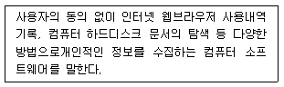
- 트로이 목마(Trojan horse)
- 스파이웨어(Spyware)
- 바이러스(Virus)
- 워엄(Worm)
- 랜섬웨어(Ransomware)
(정답률: 알수없음)
84. 대표적인 인터넷 프로토콜에 대한 설명으로 가장 옳지 않은 것은?
- HTTP : 웹 환경에서 문서를 전송하기 위해 이용되는 인터넷 프로토콜이다.
- SMFTP : 보안이 강화된 파일전송 프로토콜이다.
- POP : 전송된 메일을 수신하는데 사용되는 프로토콜이다.
- IMAP : 모든 유형의 브라우저 및 서버들을 지원하는최신의 이메일 프로토콜이다.
- FTP : 서버와 클라이언트 컴퓨터 사이에 파일을 서로 주고받을 수 있는 프로토콜이다.
(정답률: 알수없음)
85. 인터넷 조사방법의 일환인 쿠키(cookie)를 활용하는 방법으로 가장 옳지 않은 것은?
- 쿠키는 특정 웹사이트를 방문한 소비자가 어떠한 페이지를 보았는지를 파악하는데 사용된다.
- 어떤 사이트들은 쿠키를 자사의 서비스를 이용하는 고객의 특성 및 욕구에 맞추어 고객화 하는데 사용된다.
- 쿠키는 소비자들이 어떠한 사이트를 방문했는지를 파악하여 관련된 광고나 판촉활동을 지원하는데 활용될 수 있다.
- 쿠키는 동일 사용자가 여러번 Reload하게 되면 여러번 카운트되는 한계는 있으나 방문자 수통계자료로 활용되고 있다.
- 쿠키는 개인정보를 보관하여 재방문할 때마다 방문자가 이름과 주소 등을 되풀이하여 입력할 필요가 없도록 해준다.
(정답률: 알수없음)
86. 저장소로서의 하둡(Hadoop)의 장점으로 가장 옳지 않은 것은?
- 대용량 파일을 저장할 수 있는 분산 파일 시스템을 제공한다.
- 클러스터 구성을 통해 멀티 노드로 부하를 분산시켜 처리한다.
- 장비를 증가시킬수록 성능이 Linear에 가깝게 향상된다.
- 오픈소스, Insol Core 머신과 리눅스와 같은 저렴한 장비에 사용이 가능하다.
- 하둡의 부족한 기능 보완을 위해 하이레벨 스크립트를 이용한 데이터 처리를 지원하는 ‘스쿱’ 등 에코시스템이 등장하여 완전성을 높이고 있다.
(정답률: 알수없음)
87. 좋은 데이터와 나쁜 데이터를 가르는 기준에 대한설명과 관련된 질문이다. 다음 사례에서 확보하지 못한 데이터 품질 기준으로 가장 옳은 것은?
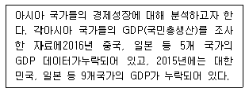
- 완전성
- 일관성
- 정량성
- 정확성
- 논리성
(정답률: 알수없음)
88. 서버를 보유하거나 고객관리시스템을 직접 개발하는 일은 자사의 경쟁력 강화에 도움이 안 되는 ‘비경쟁영역’이라는 생각 때문에 발생하는 클라우드 서비스이용으로 이 부문들을 모두 포함하는 클라우드 서비스로 가장 적합한 것은?
- CaaS, HaaS
- IaaS, HaaS
- HaaS, SaaS
- PaaS, SaaS
- IaaS, PaaS
(정답률: 알수없음)
89. 의사결정 과정 단계 중 가상적 상황에 대한 민감도 분석결과를 활용하는 단계로 가장 옳은 것은?
- 탐색단계
- 설계단계
- 선택단계
- 실행단계
- 피드백단계
(정답률: 알수없음)
90. ( )에 들어갈 용어로 옳은 것은?
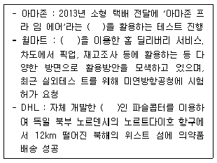
- 딥러닝
- 드론
- LBS
- 핀테크
- LPWAN
(정답률: 알수없음)
91. 공급사슬관리 성과측정을 위해 활용되는 SCOR 모델의 프로세스에 대한 설명으로 가장 옳지 않은 것은?
- 레벨 1, 계획 – SCM 추진 기업들이 비즈니스 목표달성을 위한 수요와 공급의 균형을 맞추는 프로세스
- 레벨 2, 계획 – SCM 추진 기업들의 예산 자원 할당프로세스
- 레벨 1, 제조 – SCM 추진 기업들이 조달된 재화와 용역을 완성하는 단계로 변환하는 프로세스
- 레벨 1, 실행 – SCM 추진 기업들의 자재 상태를 변경하는 계획의 수행 프로세스
- 레벨 1, 인도 – SCM 추진 기업들이 완성된 재화나 용역을 제공하는 프로세스
(정답률: 알수없음)
92. GS1(Global Standard No.1)에 대한 설명으로 가장 옳지 않은 것은?
- GS1은 전 세계 100여 개 국가로 구성된국제표준기구이다.
- GS1은 상품 및 거래처의 식별과 거래정보의 교환을 위한 국제표준 식별코드 및 바코드만 개발·보급·관리하고, RFID/EPC, 전자 문서의 개발·보급·관리는 각각의 제조회사가 전담하고 있다.
- GS1은 수출입이 빈번한 글로벌 경제 시대에 국내는 물론 해외 파트너와의 비즈니스를 지원한다.
- GS1의 상품식별코드를 사용함으로써 해당 기업은원재료 구매·생산·물류·판매 등 기업의 업무 프로세스효율 개선과 비용 절감에 도움이 된다.
- GS1은 상품식별코드 활용을 통해 기업의 유통물류분야 디지털 시스템 구축의 기반이 되어 신속·정확한 정보의 수집과 경영 전략 수립을 가능하게 한다.
(정답률: 알수없음)
93. 다음은 유통정보시스템을 개발할 때 선택하는 방법 중 무엇에 관한 설명인가?
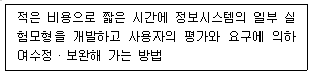
- 최종 사용자 참여 방법론
- 프로토타이핑 방법론
- RAD 방법론
- 객체지향 방법론
- JAD 방법론
(정답률: 알수없음)
94. 다음은 인터넷을 기반으로 한 유통정보시스템을 구축하는데 있어 회원관리를 위해 논리적 DB설계를 하는 단계에서 회원에 대한 엔티티를 도식화 한 그림이다. 이에 대한 설명으로 옳지 않은 것은?
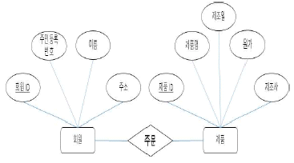
- 회원을 관리하기 위해서 회원ID, 주민등록번호, 이름, 주소를 속성으로 규정하여 논리적으로 설계한 것이다.
- 회원에서 키 속성을 가지는 것은 회원 ID뿐이다.
- 제품의 기본키(primary key)는 제품 ID이다.
- ‘회원이 제품을 주문한다’는 실제 일어나는 일을DB로 구축하기 위한 논리적 설계를 표현한 그림이다.
- 주문을 독립적인 테이블로 구축해야 한다고 가정하면, 반드시 회원ID와 제품ID를 포함시켜야 한다.
(정답률: 알수없음)
95. 다음 설명은 노나카 이쿠지로가 설명한 조직에 존재하는 지식의 종류 중 한 가지에 관련된 내용이다. 이에 해당하지 않는 것은?
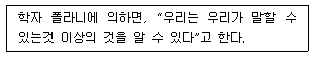
- 주방용 신제품 분야 중 가장 인기 있는 제빵기의제품 규격
- 다년간의 경험을 쌓은 농수산물 관리 팀장의 물품배치 노하우
- 비공식적이고 정확히 정의내리기 어려운 종류의 기능을 가리키는 전문적 기능(Skill)
- 물류창고에 제품을 찾기 쉽게 쌓아놓는 기술
- “손끝에서” 나오는 풍부한 전문성
(정답률: 알수없음)
96. 운송형태의 종류에 대한 설명으로 가장 옳지 않은 것은?
- 정형운송 : 컨테이너 등과 같이 화물을 단위(Unit)화하여 운송하는 형태이다.
- 단일운송 : 출발지에서 도착지까지 하나의 운송수단을 이용하는 운송 형태이다.
- LCL : 대량화물로서 컨테이너에 혼재하지 않고 운송하는 형태이다.
- 벌크(Bulk)운송 : 단위화 시킬 수 없는 화물을 특수한시설과 구조를 갖춘 운송수단으로 운송하는 형태이다.
- 복합운송 : 두 가지 이상의 운송수단을 이용해서최적의 운송경로로 운송하는 형태이다.
(정답률: 알수없음)
97. 노나카는 조직의 지식창출과정을 SECI모형으로 설명하고 있으며 나선형으로 진화되어짐을 보이고 있다. 나선형진화과정 중, 개인과 개인이 대면접촉을 시작하는 과정으로 지식생성이 이루어지는 과정은?
- 사회화(Socialization)
- 외부화(Externalization)
- 개인화(Personalization)
- 내면화(Inernalization)
- 종합화(Combination)
(정답률: 알수없음)
98. 크로스도킹(Cross Docking)의 기대효과로 가장 옳지 않은 것은?
- 물류센터의 물리적 공간이 감소된다.
- 공급체인 전체의 저장로케이션의 수가 증가한다.
- 물류센터에서의 평방미터 당 회전율이 증가한다.
- 유통업체의 결품율이 감소한다.
- 물류비용과 재고수준이 감소한다.
(정답률: 알수없음)
99. ( )안에 들어갈 용어로 옳은 것은?
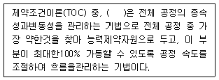
- DBR
- JIT
- QR
- 6sigma
- ECR
(정답률: 알수없음)
100. e-비즈니스에서 거래 상대별 유형과 그 사례를 짝지은 것으로 가장 옳지 않은 것은?
- B2B - e마켓플레이스
- B2C - 인터넷 쇼핑몰
- C2B - 공공전자조달입찰
- C2C - 개인간 중고차 거래
- G2C - 통합전자민원창구
(정답률: 알수없음)